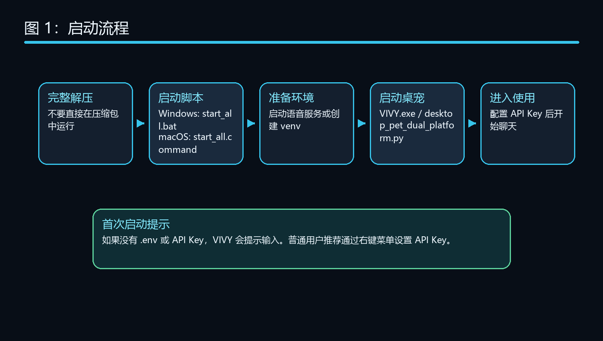
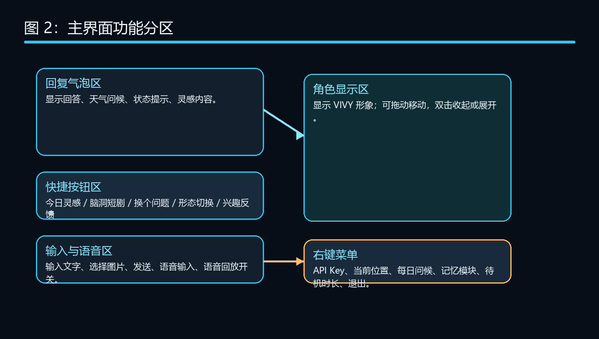
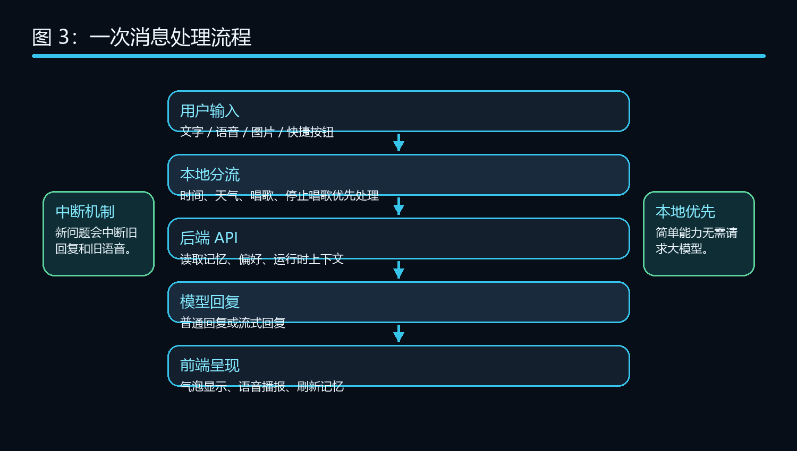
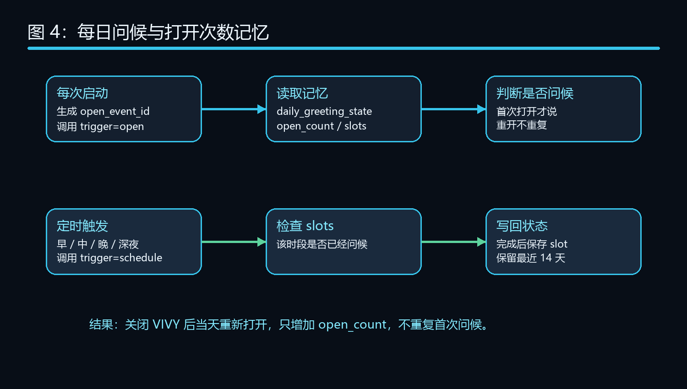
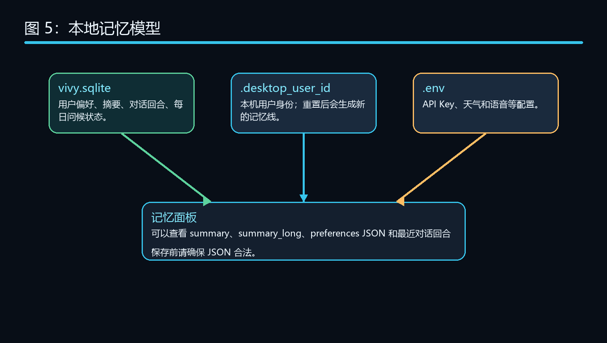
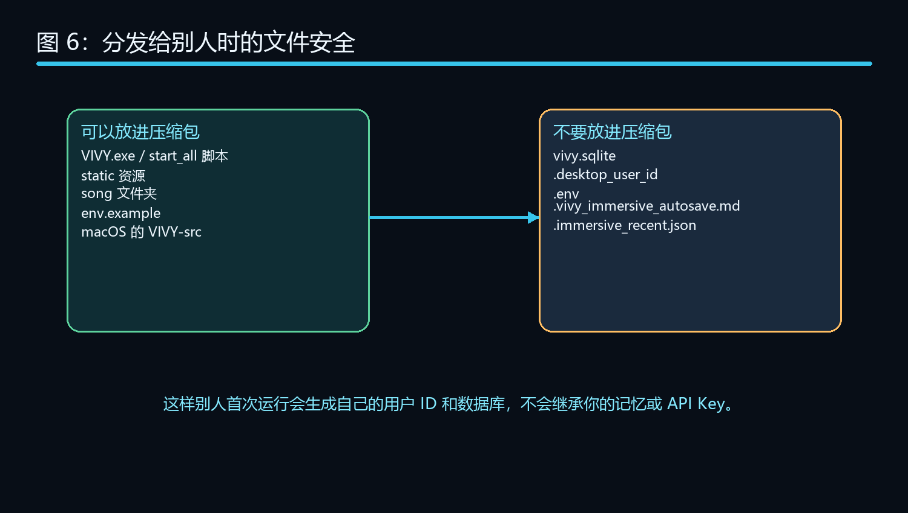
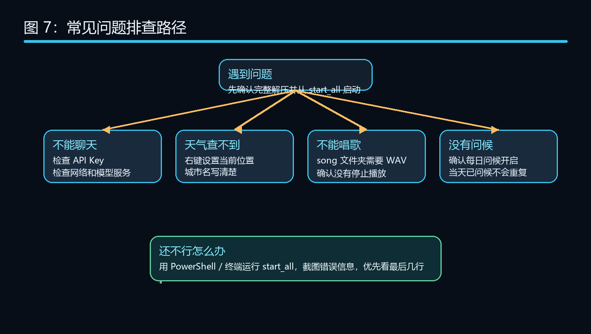

| 类别 | 文件 | 说明 |
|---|---|---|
| 可保留 | env.example | 示例配置，不包含私人 API Key。 |
| 可保留 | song 文件夹 | 放 WAV 歌曲，用于唱歌功能。 |
| 应排除 | .env | 包含 API Key 等私人配置。 |
| 应排除 | vivy.sqlite | 包含你的记忆、偏好和对话记录。 |
| 应排除 | .desktop_user_id | 你的本机用户 ID。 |
| 建议排除 | .vivy_immersive_autosave.md | 沉浸写作自动备份。 |
| 建议排除 | .immersive_recent.json | 最近打开文件记录。 |